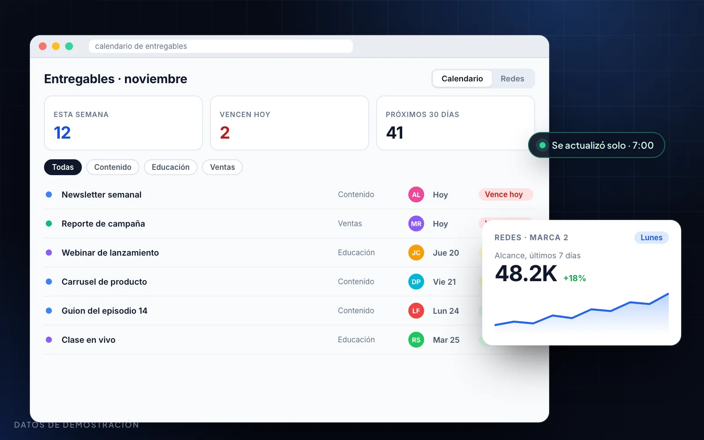
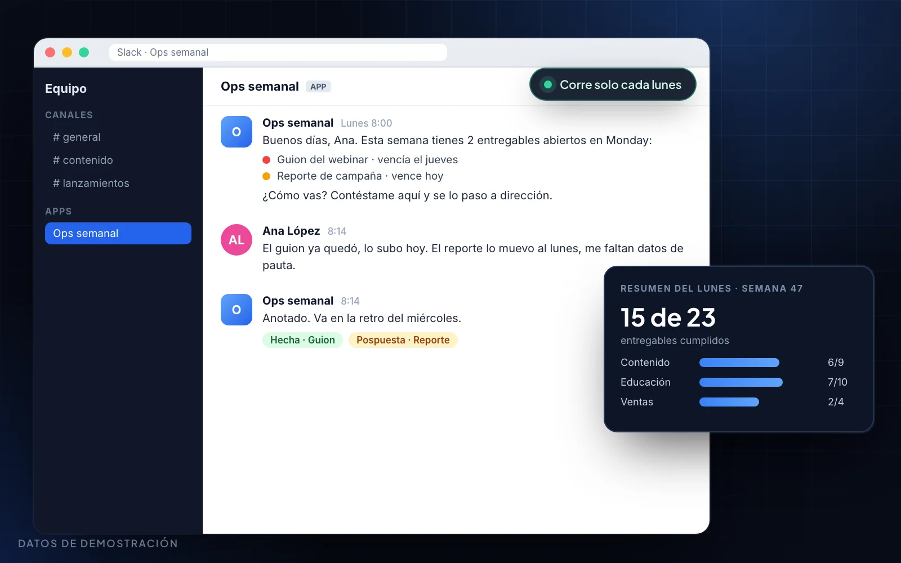
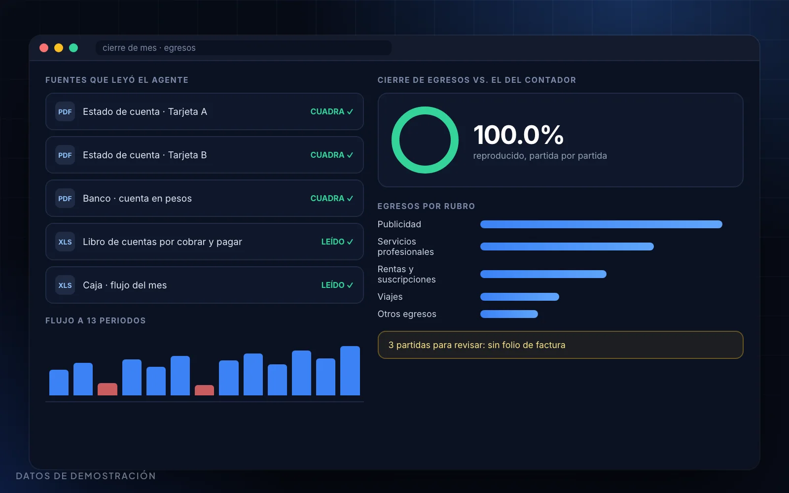
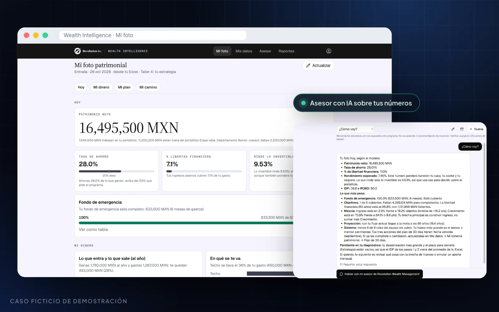
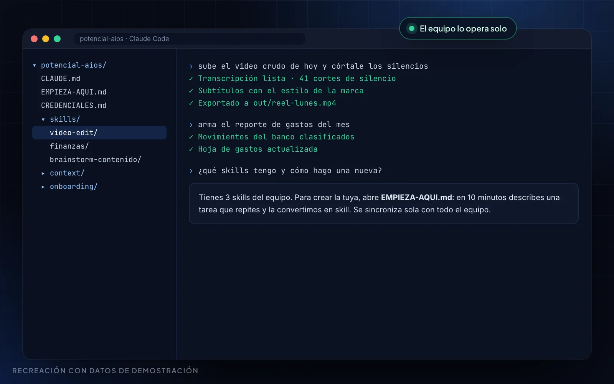
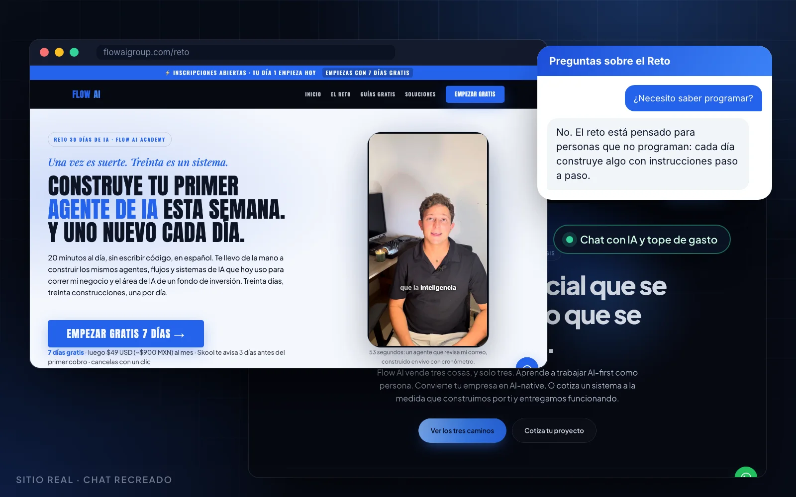
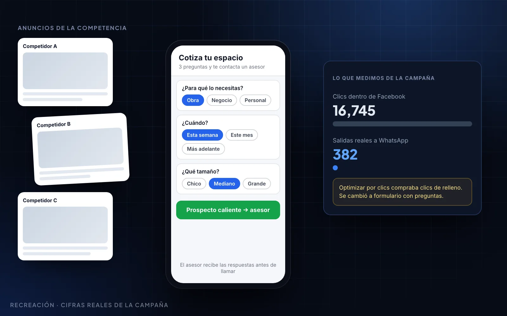
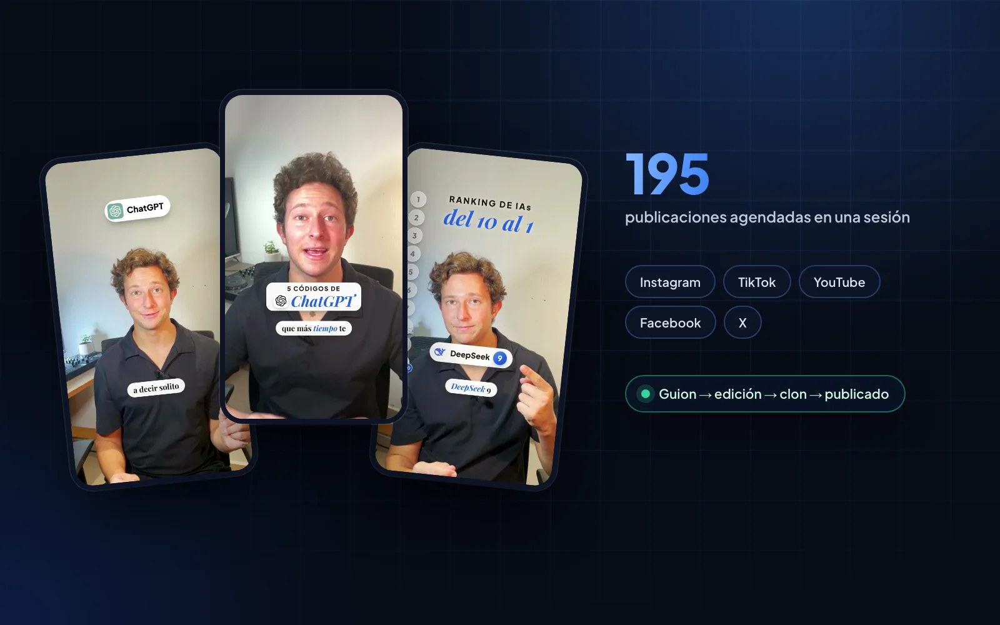

Tableros que se actualizan solos
Los entregables del equipo y las redes de tres marcas, leídos de sus sistemas y publicados solos. Nadie arma el reporte a mano.

Agente de seguimiento semanal
Cada lunes revisa qué se cumplió en Monday, le escribe a cada responsable por Slack y junta sus respuestas para dirección.

Agente de cierre financiero
Lee estados de cuenta y libros contables, clasifica cada movimiento y arma el cierre del mes y el flujo a 13 periodos.

Wealth Intelligence
Un modelo patrimonial en Excel convertido en app: cada miembro ve su foto financiera y platica con un asesor de IA sobre sus números.

Control de inventario para negocios con bodega
Existencias por bodega y por tienda, conteos desde el celular, entradas, bajas con foto y traspasos. Importa el Excel que el negocio ya tiene.

Perfil de inversión automático
Cada respuesta al cuestionario de riesgo genera sola la presentación personalizada del cliente, lista en Drive.

Sistema operativo de IA para un equipo
Skills, contexto y onboarding para que el equipo de potencial.io trabaje con Claude por su cuenta.

El cerebro de la empresa
Slack, Monday, juntas y otras seis fuentes en un solo lugar que el equipo consulta con IA.

Sitio y landing con chat de IA
flowaigroup.com y la landing del Reto: video de venta, un chat con IA que solo contesta sobre el curso y tiene tope de gasto, y el recorrido de cada visitante medido página por página.

Embudo de captación con calificador
Anuncios hechos a partir de los de la competencia, una landing que califica prospectos y la campaña en Meta. Al medirla separamos los clics reales de los de relleno.

374 guías escritas con agentes
Una biblioteca de guías de IA en español: agentes escriben por lotes, un script arma el sitio y otro revisa enlaces, cifras y duplicados antes de publicar.

Máquina de contenido con clon
De un reel que ya funcionó a uno propio: guion, edición, clon con IA y publicación en cinco redes.